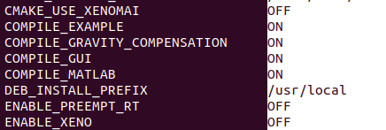

Installation
The next steps show how to install the EtherCAT Client under Ubuntu operating system. It’s also possible to use the framework under Windows OS using the WSL (Windows Subsystem for Linux).
Important: Some dependency packages are available by github cloning. The suggestion to follow these steps helping the user for finding the packages:
Download manually create_ws.sh from ecat-client-advr repository inside the scripts directory and then:
chmod +x create_ws.sh
Prepare the workspace:
./create_ws.sh [name_ws] [dir_ws, default=HOME]
Source into .bashrc the new workspace:
source ~/name_workspace/setup.bash
Then use the src dir for downloading the packages and build dir, creating the relative package sub-directory (mkdir package_name) for compiling them.
Git, CMake and Google test
Install git packages:
sudo apt update
sudo apt install -y git gitg git-gui
sudo apt install -y build-essential curl cmake cmake-curses-gui
sudo apt install -y libgtest-dev
Network and Terminator
Install network and terminator packages:
sudo apt install -y net-tools openssh-server sshpass curl gnome-terminal terminator
YAML and FMT
Install yaml utils and fmt:
sudo apt install -y libyaml-cpp-dev libfmt-dev
EtherCAT Master Server
SOEM
Install SOEM library:
git clone https://github.com/alessiomargan/SOEM
actual branch xeno3.
Zmq, Protobuf, Msgpack, Boost
Install mechanism protocols:
sudo apt install -y libzmq3-dev protobuf-compiler libmsgpack-dev libboost-system-dev
git clone https://github.com/zeromq/cppzmq
Eigen3
Install Eigen3:
sudo apt install -y libeigen3-dev
ecat-master-advr
Install ecat-master-advr:
git clone https://github.com/Advanced-Robotics-Facility/ecat-master-advr
Note: This is a private repository. Ask to Advanced-Robotics-Facility for the access.
MatLogger
Install matlogger library:
sudo apt install -y libmatio-dev python3-pip
git clone https://github.com/ADVRHumanoids/MatLogger2
QT and GUI Tools
Install GUI tools:
sudo apt install -y qt6-tools-dev qt6-declarative-dev libqt6charts6-dev uuid-dev libtiff-dev qttools5-dev
Matlab and Simulink
Install Matlab/Simulink tools:
sudo dpkg --install ecat-client-advr/src/matlab/ec_block/external/blockfactory/(OS)/blockfactory_package-0.8.3-r0.0.1-amd64.deb
Build and install the EtherCAT Client Library from source
Download and compile EtherCAT Client:
git clone https://github.com/Advanced-Robotics-Facility/ecat-client-advr
Note: Select the variable to compile (EtherCAT Client Examples an Gravity compensation, the EtherCAT Client GUI and EtherCAT client block [Matlab/Simulink]):
Note: It’s possible to compile the EtherCAT Client Library with Xenomai Real-Time OS or Preempt-RT Real Times OS.
Install the EtherCAT Client Library from debian package
Download from this site the latest version of EtherCAT Client Debian Package and install it:
https://github.com/Advanced-Robotics-Facility/ecat-client-advr/releases
Install EtherCAT Client Librarys:
sudo dpkg --install ecat-client-advr_nrt_package-0.0.1-r0.0.1-amd64.deb
Create environment variable EC_CFG
Export environment variable EC_CFG:
export EC_CFG=~/code_ws/src/ecat-client-advr/config/ec_cfg.yaml